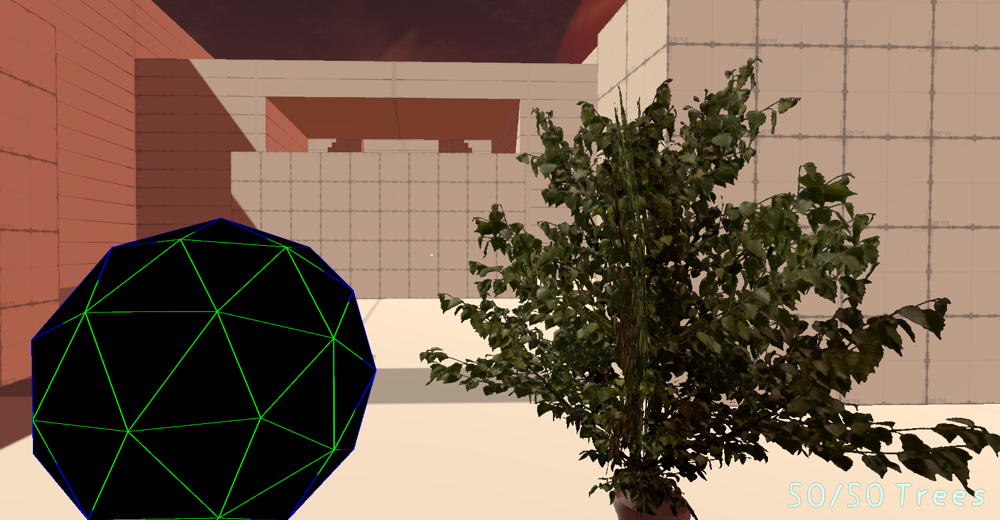

Download für Windows
Für Windows kannst du das Spiel schon jetzt herunterladen, aktuell in Version 0.1
Da wir (noch) keine eigenen Server bessitzen, kannst du dir unser Spiel von Google Drive heruterladen
Bitte beachte, dass dein PC relativ leistungsstark sein muss um das Spiel mit optimaler Performance spielen zu können.